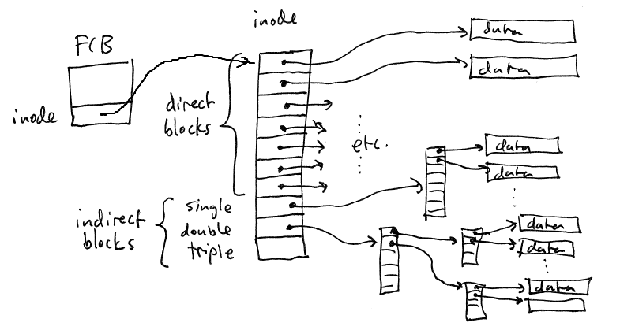
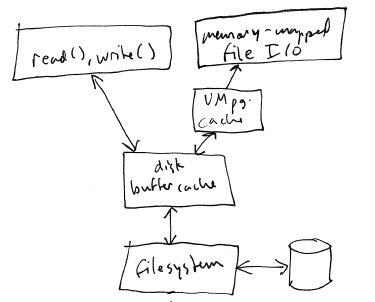
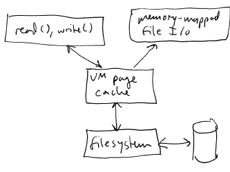

Most OSes use indexed
allocation. Issues with indexed allocation:
A
single index block probably won't have enough entries to allow very
large files to created. This problem can be solved by making some
of the entries in the index block indirect. An indirect entry in
an index block contains the block number of another index block rather
than a data block. (This is pretty much the same idea as
multi-level page tables.) Indirect blocks can be single-indirect,
double indirect, triple indirect, etc. By using indirect blocks a
filesystem can store very large files (terabytes or more of data).

On many block devices, the
blocks are quite small. For example, hard drives generally use
512 bytes as the block size. (Note that hard disks often refer to
a block as a "sector".)
Rather than allocating
storage on a block device at the granularity of individual blocks, most
filesystems allocate clusters
of blocks. A typical cluster might contain 4KB or 8KB of disk
blocks. Clustering improves performance because more data can be
located with a single disk seek. A disadvantage is internal
fragmentation: small files might occupy an entire cluster while using
only a small part of it.
Another important task that
must be handled by a filesystem implementation is keeping track of
which disk blocks are available to be allocated, and which are in-use.
Bitmap:
A
simple scheme is to use a bitmap.
A bitmap is an array of bits: the index of each bit corresponds to one
disk block. A 0 in the bitmap indicates that the corresponding
block is available, while a 1 indicates that the block is in-use.
When
the filesystem needs to allocate a block to a file or directory, it
checks the bitmap. The first available block is marked as in-use
and its block number is returned.
Freeing
a block (e.g., when a file is deleted) simply sets the block's bit in
the bitmap back to 0.
The
bitmap will generally be kept in memory so that it can be quickly
accessed.
Linked list (freelist):
The
free blocks (or clusters) can be arranged in a linked list.
Simple.
If every read or write to a
file required disk access, it would be extremely slow. The OS
kernel speeds up disk I/O by caching recently-used data in memory.
Recall that we have spoken of
files as being VM objects (persistent data stores that can be mapped
into process virtual address spaces).
In operating systems that
were developed before virtual memory was a common hardware feature,
support for memory-mapped file I/O was "bolted on" in the following
manner:

Because the disk buffer cache
and the virtual memory page cache were separated, data had to be copied
between them to support memory-mapped disk I/O.
In a unified VM and disk
buffer cache, the memory used to cache file data is directly mapped
into virtual memory, eliminating unnecessary copying.

See presentation slides.